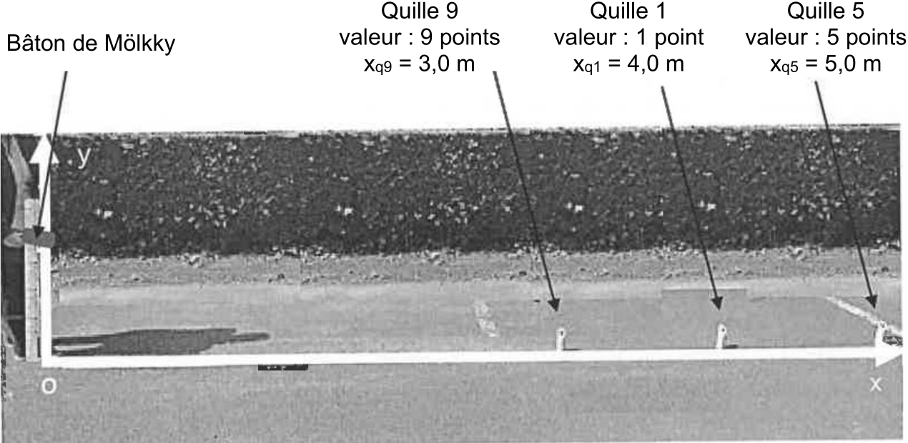
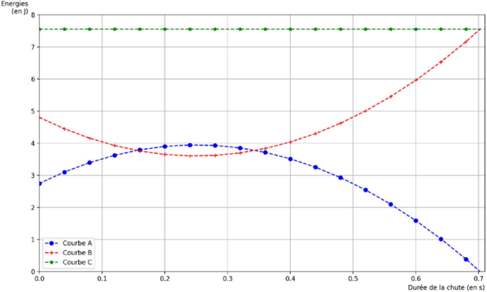

Le Mölkky, créé en 1996, est un jeu de plein air orifinaire de
Finlande. Dans ce jeu, le joueur doit faire tomber des quilles en bois,
à l’aide d’un bâton, afin d’atteindre un score de 50 points.
Une quille tombée lui donnera le nombre de points sur cette dernière,
compris entre 1 et 12. Plusieurs quilles tombées donneront au joueur le
nombre de points correspondant au nombre de quilles au sol.
L’objectif de cet exercice est d’établir l’équation horaire de la
trajectoire du bâton lancé et de déterminer le lieu d’impact au sol afin
de prévoir une éventuelle victoire d’un joueur.
On s’intéresse au mouvement du centre de masse \(G\) du bâton lorsqu’un joueur le lance afin
de faire tomber une quille. L’étude est réalisée dans le référentiel
terrestre supposé galiléen et on considère qu’une fois lancé, le bâton
n’est soumis qu’ç son poids. Pour simplifier, on suppose que le bâton ne
tourne pas sur lui-même. La masse du bâton est notée \(m\).
Quand le bâton quitte la main du joueur, son centre de masse \(G\) est situé à une hauteur \(h\) par rapport au sol avec un vecteur
vitesse initiale \(\vv{v_0}\) qui forme
un angle \(\alpha\) avec
l’horizontale.
On étudie le mouvement du centre de masse du système bâton
dans le repère cartésien indique sur le Doc. 1
Énoncer la deuxième loi de Newton et l’utiliser pour établir les expressions des coordonnées notées \(a_x(t)\) et \(a_y(t)\) du vecteur accélération \(\vv{a(t)}\) du point \(G\) selon les axes (\(Ox\)) et (\(Oy\)).
Établir les expressions des coordonnées horizontales notées \(v_x(t)\) et verticales \(v_y(t)\) du vecteur vitesse \(\vv{v(t)}\) du point \(G\).
À partir des expressions des coordonnées de la vitesse \(v_x(t)\) et \(v_y(t)\) et du Doc. 1, établir que les équations horaires du mouvement \(x(t)\) et \(y(t)\) du point \(G\) sont : \[\left\{ \begin{array}{l} x(t) = v_0 \cdot \cos(\alpha) \cdot t \\[4pt] y(t) = - \dfrac{1}{2} g \cdot t^2 + v_0 \cdot \sin(\alpha)\cdot t + h \end{array} \right.\]
vitesse initiale de lancer du bâton de Mölkky : \(v_0 = \SI{4,9}{\meter\per\second}\)
hauteur depuis laquelle le bâton est lancé : \(h = \SI{.70}{\meter}\)
angle avec lequel le bâton est lancé par rapport à l’horizontale : \(\alpha = \SI{30}{\degree}\)
intensité du champ de pesanteur terrestre : \(g = \SI{9.8}{\meter\per\second}\)
À l’aide des données et des équations horaires du mouvement, montrer que l’expression de l’équation de la trajectoire \(y(x)\), \(x\) et \(y\) étant exprimés en mètres, s’écrit dous la forme : \[y(x) = -0.27 x^2 + 0,58 x + 0,70\]
Un joueur ayant déjà marqué 41 points s’apprête à lancer le bâton de Mölkky. Pour gagner, il doit atteindre exactement le score de 50 points. La configuration du jeu est représentée sur la photographie du doc. 2.

Dans notre étude, la taille des quilles est considérée comme
négligeable au regard des distances mises en jeu. On assimilera alors la
quille à un point posé au sol. On suppose qu’il n’y a pas de rebond du
bâton à la suite du lancer.
Dans la question suivante, le candidat est invité à prendre des
initiatives et à présenter la démarche quivie, même si elle n’a pas
abouti. La démarche est évaluée et nécessite d’être correctement
présentée.
Vérifier que la partie est remportée par le joueur si le lancer est réalisé dans les conditions précisées dans les données précédentes.
Sur le doc. 3, on a reproduit un extrait d’un programme Python qui permet de calculer puis de tracer les courbes représentant l’énergie cinétique \(E_c\), l’énergie potentielle de pesanteur \(E_p\) et l’énergie mécanique \(E_m\) du bâton de Mölkky lors de son lancer. Les données numériques utilisées sont identiques aux questions précédentes.
# [...] lignes precedentes
Ec1 = []
Ep1 = []
Em1 = []
for i in range(len(tl)):
Ec1 = 0.5 * 0.4 * (vxl[i]**2 + vyl[i]**2)
Ec1.append(Ec)
Ep1 = 0.4 * 9.81 * y[i]
Ep1.append(Ep1)
Em1 =
Em1.append(Em1)
# [...] lignes suivantesÀ partir du doc. 3, déterminer la masse \(m\) du bâton de Mölkky. justifier la réponse.
Écrire et compléter, sur votre copie, la ligne 14 du programme du doc. 3 qui permet de calculer l’énergie mécanique \(E_m\) du bâton de Mölkky.
Le doc. 4 représente les courbes affichées après avoir exécuté le programme Python complet.

Attribuer chaque courbe du doc. 4 à l’énergie représentée. Justifier la réponse.
Déterminer la "durée de vol" du bâton de Mölkky (durée de chute) et en déduire que la partie décrite précédemment est remportée par le joueur, en considérant les équations horaires du mouvement établies dans la question 3.